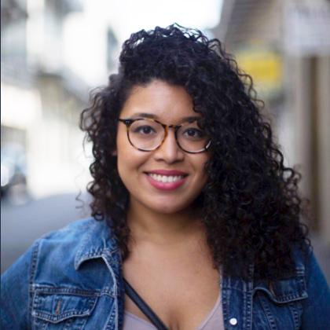
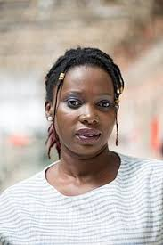
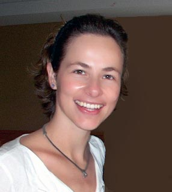

☰ Menu
Encouragement Quotes
“It doesn’t matter who you are, where you come from. The ability to triumph begins with you. Always.” –Oprah Winfrey
“Define Goal. Take Action. Stay Focused. Expect Success. Nothing Less.” - Michele Ruiz
“Intelligence plus character that is the goal of true education.” - MLK
Inspirational Women of color in CS

Nicole Dominguez is a freelance front-end developer and product designer.
She Works with HTML, CSS, Sass/Less, Haml, jQuery, Django and Python.

Marieme Jamme is a Senegalese businesswoman, blogger, technologist and social entrepreneur based in London.
She is also particularly dedicated to empowering women and girls through science, technology, art, engineering,
maths and design (STEAMD).

Fernanda Bertini Viégas is a Brazilian scientist and designer, whose work focuses on the social,
collaborative and artistic aspects of information visualization.
Her artistic visualizations have been exhibited in venues such as the New York Museum of Modern Art,
the Boston Institute of Contemporary Art, and the Whitney Museum of American Art.

Kavita Krishnaswamy is a Ph.D. candidate in Computer Science at the University of Maryland, Baltimore County.
She is developing several prototype robotic systems that will support transferring,
repositioning, and personal care,with a focus on accessible user interfaces for control
that are feasible for persons with severe disabilities.